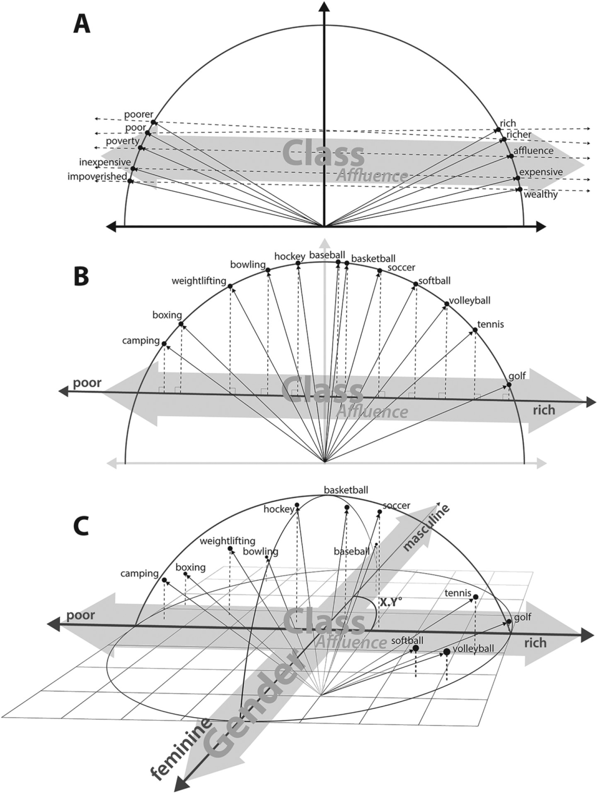
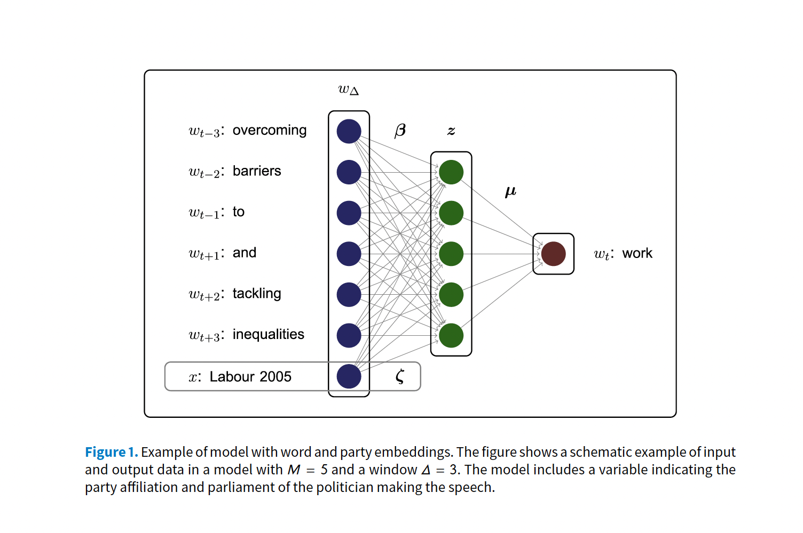

Advanced Text-As-Data - Winter School - Iesp UERJ
Day 2: Word Embeddings: Theory and Practice
Professor: Tiago Ventura
Plans for Today
Word Embeddings
Semantics, Distributional Hypothesis, Moving from Sparse to Dense Vectors
Word2Vec Algorithm
Mathematical Model
Estimate with Neural Networks
Estimate using co-occurance matrices
Practice
Work through:
Working with pre-trained models
Discuss Word Embeddings Applications
time permits: estimating word embeddings with matrix factorization
Word Embeddings
Vector Space Model: From yesterday
In the vector space model, we learned:
A document \(D_i\) is represented as a collection of features \(W\) (words, tokens, n-grams..)
Each feature \(w_i\) can be place in a real line, then a document \(D_i\) is a point in a \(W\) dimensional space.
Embedded in this model, there is the idea we represent words as a one-hot encoding.
- “cat”: [0,0, 0, 0, 0, 0, 1, 0, ….., V] , on a V dimensional vector
- “dog”: [0,0, 0, 0, 0, 0, 0, 1, …., V], on a V dimensional vector
How can we embed some notion of meaning in the way we represent words?
Distributional Semantics
“you shall know a word by the company it keeps.” J. R. Firth 1957
Distributional semantics: words that are used in the same contexts tend to be similar in their meaning.
How can we use this insight to build a word representation?
Move from sparse representation to dense representation
Represent words as vectors of numbers with high number of dimensions
Each feature on this vectors embeds some information from the word (gender? noun? sentiment? stance?)
Learn this representation from the unlabeled data.
Sparse vs Dense Vectors
One-hot encoding / Sparse Representation:
cat = \(\begin{bmatrix} 0,0, 0, 0, 0, 0, 1, 0, 0 \end{bmatrix}\)
dog = \(\begin{bmatrix} 0,0, 0, 0, 0, 1, 0, 0, 0 \end{bmatrix}\)
Word Embedding / Dense Representation:
cat = \(\begin{bmatrix} 0.25, -0.75, 0.90, 0.12, -0.50, 0.33, 0.66, -0.88, 0.10, -0.45 \end{bmatrix}\)
dog = \(\begin{bmatrix} 0.25, 1.75, 0.90, 0.12, -0.50, 0.33, 0.66, -0.88, 0.10, -0.45 \end{bmatrix}\)
Why Word Embeddings?
Encoding similarity: vectors are not ortogonal anymore!
Encodes Meaning: by learning the context, I can somewhat learn what a word means.
Automatic Generalization: learn about one word allow us to automatically learn about related words
As a consequence:
Word Embeddings improves several NLP/Text-as-Data Tasks.
Allows to deal with unseen words.
Form the core idea of state-of-the-art models, such as LLMs.
Estimating Word Embeddings
Approches:
- Count-based methods: look at how often words co-occur with neighbors.
- Use this matrix, and use some factorization to retrieve vectors for the words
- This approach is called “GloVE” algorithm
- Fast, not computationally intensive, but not the best representation, because it is not fully local
- Neural Networks: rely on the idea of self-supervision
- use unlabeled data and use words to predict sequence
- the famous word2vec algorithm
- Skipgram: predicts context words
- Continuous Bag of Words: predict center word
Word2Vec: a framework for learning word vectors (Mikolov et al. 2013)
Core Idea:
We have a large corpus (“body”) of text: a long list of words
Every word in a fixed vocabulary is represented by a vector
Go through each position t in the text, which has a center word \(c\) and context (“outside”) words \(t\)
Use the similarity of the word vectors for \(c\) and \(t\) to calculate the probability of o given c (or vice versa)
Keep adjusting the word vectors to maximize this probability
- Neural Network + Gradient Descent
Skigram Example: Self-Supervision

Source: CS224N
Skigram Example: Self-Supervision

Source: CS224N
Encoding Similarity
To estimate the model, we first need to formalize the probability function we want to estimate.
This is similar to a logistic regression
In logistic regression: probability of a event occur given data X and parameters \(\beta\):
\[ P(y=1| X, \beta ) = X * \beta + \epsilon\]
\(X * \beta\) is not a proper probability function, so we make it to proper probability by using a logit transformation.
\(P(y=1|X, \beta ) = \frac{exp(XB)}{1 + exp(XB)}\)
Use transformation inside of a bernouilli distribution, get the likelihood function, and find the parameters using maximum likelihood estimation:
\[L(\beta) = \prod_{i=1}^n \bigl[\sigma(X_i^\top \beta)\bigr]^{y_i} \bigl[1 - \sigma(X_i^\top \beta)\bigr]^{1 - y_i} \]
\(P(w_t|w_{t-1})\)
This is the probability we want to estimate. To do so, we need to add parameters to it:
- \(P(w_t|w_{t-1})\) represents how similar these words are.
- The jump: if we assume words are vectors, we can estimate their similarities:
- \(P(w_t|w_{t-1}) = u_c \cdot u_t\)
- \(u_c \cdot u_t\)
- dot product between vectors (\(x_1*y_1 + x_2*y_2 .... x_n*y_n\))
- measures similarity using vector projection
- \(u_c\): center vector
- \(u_t\): target/neighbor vectors
- \(u_c \cdot u_t\) is also not a proper probability distribution. So we will use a softmax transformation.
\[P(w_t|w_{t-1}) = \frac{exp(u_c \cdot u_t)}{{\sum_{w}^V exp(u_c*u_w)}}\]
- mathematically, this is the logistic transformation (sigmoid) for multiple classes.
Softmax Transformation
\[P(w_t|w_{t-1}) = \frac{exp(u_c \cdot u_t)}{{\sum_{w}^V exp(u_c*u_w)}}\]
Dot product compares similarity between vectors
numerator: center vs target vectors
exponentiation makes everything positive
Denominator: normalize over entire vocabulary to give probability distribution
What is the meaning of softmax?
max: assign high values to be 1
soft: still assigns some probability to smaller values
generalization of the logit ~ multinomial logistic function.
Word2Vec: Objective Function
For each position \(t\), predict context words within a window of fixed size \(m\), given center word \(w\).
Likelihood Function
\[ L(\theta) = \prod_{t=1}^{T} \prod_{\substack{-m<= j<=m \\ j \neq 0}}^{m} P(w_{t+j} | w_t; \theta) \]
Assuming independence, this means you multiplying the probability of every target for every center word in your dictionary.
This likelihood function will change if you do skipgram with negative sampling (See SLP chapter 6)
Objective Function: Negative log likelihood
\[J(\theta) = - \frac{1}{T}log(L(\theta))\]
better to take the gradient with sums
the average increases the numerical stability of the gradient.
Neural Networks

Skipgram Architecture


Simple Example
Let’s practice with a vocabulary of size 5, a embedding with 3 dimensions, and the task is to predict ONLY the next word.
Step 1: v_{1,5} * W_{5,3} = C_{1,3}
- Where W is the embedding for center words
\[ \mathbf{v} = \begin{bmatrix} 0 \\ 0 \\ 1 \\ 0 \\ 0 \end{bmatrix} \]
\[ \mathbf{W} = \begin{bmatrix} .1 & .3 & -.23 \\ .2 & -.06 & -.26 \\ .3 & -.16& -.13 \\ .5 & .26 & -.03 \\ .6 & -.46 & -.53 \end{bmatrix} \]
\[v_T*W = C = \begin{bmatrix}.3 & -.16& -.13 \end{bmatrix} \]
Dot Product between vectors
Step 2: \(C_{1,3} * W2_{3,5} = P_{1,5}\)
- Where \(W_2\) is the embedding for context/target words
\[ C_{1,3} * W2_{3,5} = P_{1,5} \]
\[ \begin{bmatrix}.3 & -.16& -.13 \end{bmatrix} * \begin{bmatrix} .1 & .3 & -.23 & .3 & .5 \\ .2 & -.06 & -.26 & .3 & .5 \\ .3 & -.16& -.13 * .3 & .5\\ \end{bmatrix} \]
\[ P_{1,5}= \begin{bmatrix} -0.041 & 0.1204 & -0.02233 & -0.023 & 0.07 \end{bmatrix} \]
Take the softmax
\[ P(w_t|w_{t-1}) = \frac{exp(0.041)}{{-0.041 + 0.1204 + -0.02233 + -0.023 + 0.07}} \]
Repeat this for all the words in the vocabulary.
After that, you calculate the loss function with the negative likelihood (because you know which word you are predicting)
Use the loss to perform gradient descent and update the parameters
Real Skipgram Algorithm
Word Embeddings Matrices
Training Embeddings
Embeddings need quite a lot of text to train: e.g. want to disambiguate meanings from contexts. You can download pre-trained, or get the code and train locally
Word2Vec is trained on the Google News dataset (∼ 100B words, 2013)
GloVe are trained on different things: Wikipedia (2014) + Gigaword (6B words), Common Crawl, Twitter. And uses a co-occurence matrix instead of Neural Networks
fastext from facebook
Applications:
Once we’ve optimized, we can extract the word specific vectors from W as embedding vectors. These real valued vectors can be used for analogies and related tasks
Applications
Let’s discuss now several applications of embeddings on social science papers. These paper show:
How to map words on cultural dimensions
How to use embeddings to measure emotion in political language.
And a favorite of political scientists, how to use embeddings to measure ideology.
Capturing cultural dimensions with embeddings
Austin C. Kozlowski, Austin C., Matt Taddy, and James A. Evans. 2019. “The Geometry of Culture: Analyzing the Meanings of Class through Word Embeddings.” American Sociological Review 84, no. 5: 905–49. https://doi.org/10.1177/0003122419877135.
Word Embeddings can be use to capture cultural dimensions
Dimensions of word embedding vector space models closely correspond to meaningful “cultural dimensions,” such as rich-poor, moral-immoral, and masculine-feminine.
a word vector’s position on these dimensions reflects the word’s respective cultural associations
Method
Results
Ideological Scaling
Rheault, Ludovic, and Christopher Cochrane. “Word embeddings for the analysis of ideological placement in parliamentary corpora.” Political Analysis 28, no. 1 (2020): 112-133.
Can word vectors be used to produce scaling estimates of ideological placement on political text?
Yes, and word vectors are even better
It captures semantics
No need of training data (self-supervision)
Method
Results

Measuring Emotion
Gennaro, Gloria, and Elliott Ash. “Emotion and reason in political language.” The Economic Journal 132, no. 643 (2022): 1037-1059.

Method
Building seed lists: They start with small seed lists of words clearly associated with “emotion” and “reason”
Expanding dictionaries with word embeddings: Instead of just using these short lists, they expand them automatically using word embeddings.
Emotionality Score:
\[ Y_i = \frac{\text{sim}(\vec{d}_i, \vec{A}) + b}{\text{sim}(\vec{d}_i, \vec{C}) + b} \]
Coding
Text-as-Data